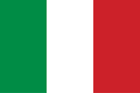

Aduana de Italia

Funciones de Aduana
Es la entidad encargada de vigilar toda la carga que cruza la frontera, así como la recaudación de los impuestos.
El sistema aduanero en Italia es administrado por la agencia pública “Agencia de Aduanas”
| Exportación |
Importación |
| Ropa |
Petrolio Crudo |
| Marroquineria |
Medicamentos Envasados |
| Calzado |
Gas Petrolio |
| Joyeria |
Oro |
| Gafas |
|
Importación y Exportación
| Aduanas |
| Aduana de Augusta |
Aduana de Bagnol |
| Aduana de Bari |
Aduana de Eagliari |
| Aduana de Gela |
Aduana de Milazzo |
| Aduana de Messina |
Aduana de Napoli |
| Aduana de Palermo |
Aduana de Puerto Torres |
| Aduana de Sondrio |
Aduana de Savona |
| Aduana de Tarant |
Aduana de Trapani |
| Aduana de Tirano |
Aduana de Puerto Foxi |
| Aduana de Catania |
Aduana de Givia Tauro |
| Aduana de Genova |
Aduana de Livorno |
| Aduana de Ravenna |
Aduana de La spezia |
| Aduana de Trieste |
Aduana de Venecia |
| Aduana de Milano |
Aduana de Civitavecchia |
| Aduana de Ancona |
Aduana de Rome (Roma) |
| Aduana de Bolzano |
Aduana de Como |
| Aduana de Bizzarone |
|
Aduanas del País
| Aranceles |
Los aranceles varian dependiendo en los niveles de |
|
importacion y exportacionde en todo año
|
Araceles del País